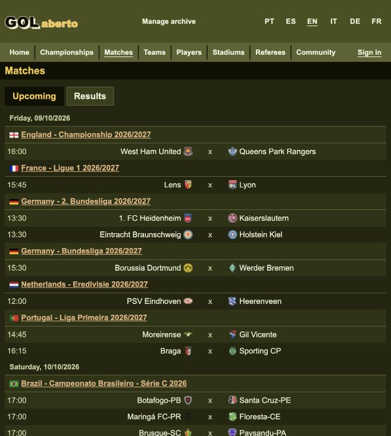
2026-10-16 · Implemented and verified
Local matches page now starts Upcoming at seven calendar days before today in Brasília. Previous reaches earlier unplayed fixtures; Next returns through the starting position and continues forward. Day and championship grouping and each tab’s remembered position are preserved.

The default offset was 1,013 (page 27). Previous loaded the preceding forty fixtures, ending October 8. Next restored exactly the original forty rows. Another Next loaded offset 1,053 with no repeated rows; Previous restored the default page again.
The additive migration completed as 048_matches_start. The database kept system identifier 7697368835535351847 and all 318,827 games. The web services restarted healthy.
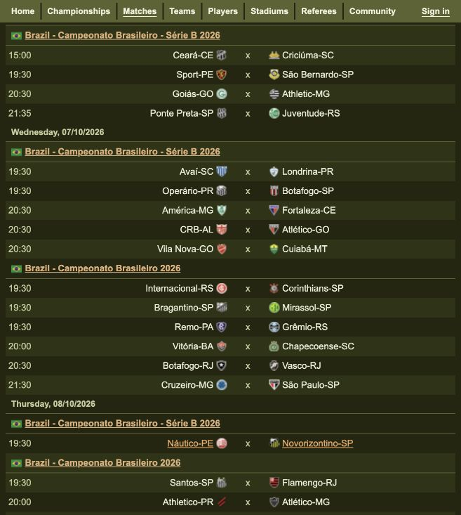
Sayt doctor: exit 0 Sayt generate + lint: exit 0 ✓ lint admit ✓ lint caddy ✓ lint cue ✓ lint derive ✓ lint handlers ✓ lint identity ✓ lint markup ✓ lint proto ✓ lint rpk ✓ lint sql ✓ lint types ✓ lint facts Focused typed-placeholder lint regression: exit 0, 4 tests / 21 steps passed Final isolated browser acceptance: exit 0, 66 passed / 0 failed (2m0s) Live additive migration: exit 0 Web service restart: exit 0, Caddy and render healthy Git whitespace check: exit 0
The acceptance suite walked backward to the oldest partial page, then forward through the same rows, checked the default cutoff, both tabs, remembered navigation and the last page. It ran on disposable fixture databases, separate from the imported archive.
The existing Matches storyboard and controls were the design oracle; no new visual choice was needed. The lead implemented and reviewed the bounded changes. The Pronto backend seat ran on GPT-6 Astra with high reasoning and identified one obsolete validation rule: the oldest partial page needs a next offset below forty. The rule now permits any positive next offset. No other findings remained. A simplification pass removed an unnecessary test cast; existing identities and ordinals were checked unchanged.
The typed-placeholder lint correction follows the existing interpreter behavior: a whole fallback placeholder retains its enclosing value’s type. Literal machine assignments and interpolated text still receive spelling checks.
The browser now formats each kickoff instant in its timezone, including daylight-saving changes. Date headings, match details, home highlights, team and player histories, championship rounds and related matches use the same reader-local date and clock. Unknown kickoff times stay blank and keep their known civil date. The server’s archive selection and bounded pagination remain canonical; only the fetched window is arranged into reader-local day and championship groups.

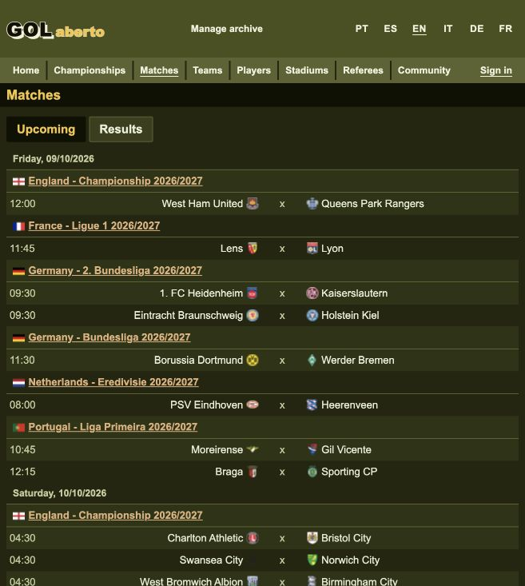
Using the imported archive, Next loaded forty different rows with no overlap; Previous restored all forty original rows. Opening the first match showed the same October 9 date and 12:00 clock. Its label now says “Kick-off (your time)”; corresponding wording was corrected in all six languages.
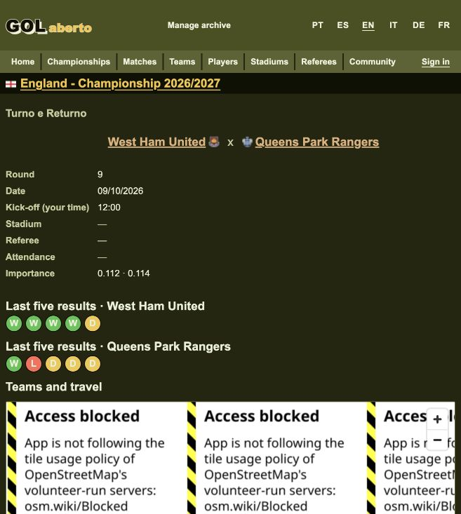
Sayt doctor: exit 0 Sayt generate + lint, including final translated labels: exit 0 Interpreter regression tests: exit 0, 15 suites / 63 steps / 0 failed Final isolated browser acceptance: exit 0, 67 passed / 0 failed (2m47s) Local web image build: exit 0 Local Caddy and render update: exit 0, both healthy Imported database: system identifier 7697368835535351847, 318827 games retained Whitespace check: exit 0
The acceptance suite independently compared database timezone conversions with displayed clocks and dates in Los Angeles and Tokyo, on both Matches tabs before and after paging, home highlights, match facts and related-match descriptions. A disposable fixture proved that a match without a kickoff retains its civil date and has no invented clock. The final wording-only edit was followed by generation and lint, parsing all six locale files, and live browser verification.
The first local deployment exposed a published runtime that lacked the new native format. Rebuilding with the workspace runtime resolved it; the successful live screenshots above were captured afterwards. Only the web services were restarted. Test runs used separate disposable databases and their exited containers were removed.
The accepted layout and existing date presentation supplied the oracle; no new taste decision or design tool was needed. The lead handled the app and generated cascade. A separate interpreter implementation ran on GPT-6 Astra with high reasoning. The frontend seat ran on GPT-5.6 Sol with medium reasoning, substituting for the unavailable requested Terra route. It identified redundant raw-date titles, stale display contracts and missing browser evidence for unknown kickoff times; these were resolved. The follow-up review reported no findings. The lead additionally checked home grouping across midnight and preserved server rank within each local day. One explicit simplification pass found no further useful change. No human decision remains.
The user requested a clearer distinction between dates and games, with Stitch helping the design. The shared date now uses a compact dark olive bar, bold uppercase text, a four-pixel gold leading edge and twelve pixels before later days. Championship headings and game rows retain the existing hierarchy. The treatment also appears on home highlights.
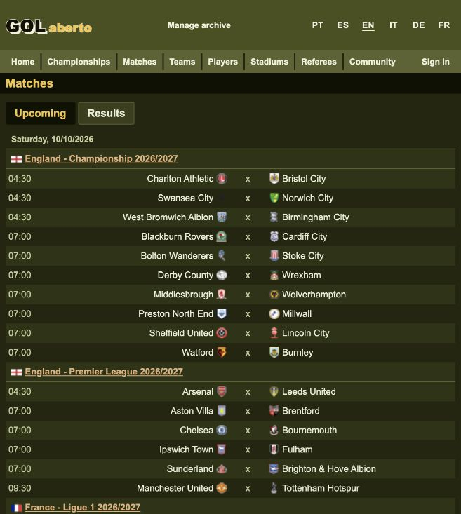
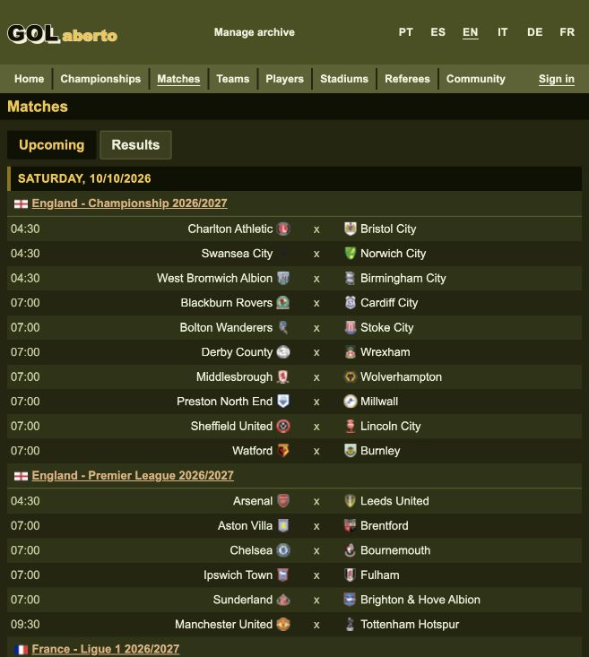
Connected Stitch edited project 3684321283098058780 into screen 28196bac2ef547119c4b0327c655acda, comparing light, dark and phone treatments. The app uses the existing band, band-ink and date-bar tokens. Its contract is recorded in ir.html at date-heading-oracle. The narrow refinement followed the requested distinction within the existing theme; illustrative counts and other canvas changes were excluded.
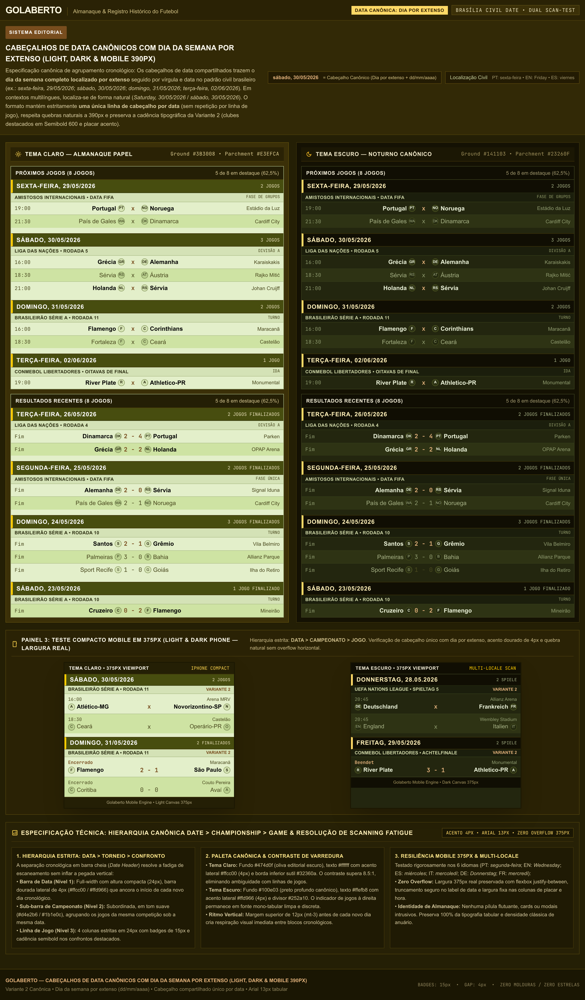
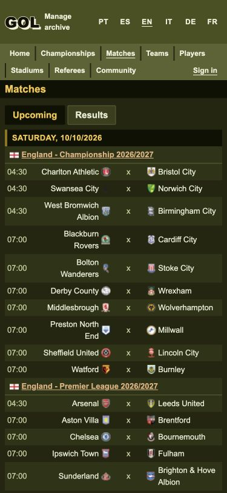
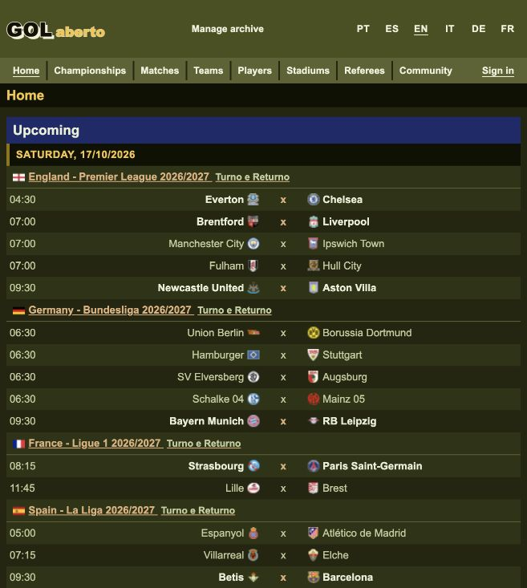
Sayt doctor: exit 0 Sayt generate + lint: exit 0 Sayt integrate, isolated browser acceptance: exit 0, 67 passed / 0 failed (2m19s) Workspace web image build: exit 0 Local Caddy and render update: exit 0, healthy Date text contrast: light 8.99:1, dark 11.75:1 Live 375px check: no horizontal overflow Live Next / Previous: original forty rows restored Later date section: 12px separation; first section: 0px Git whitespace check: exit 0
The browser suite exercised light pages across 390, 768, 1366 and 1920 pixels, dark tokens, shared grouping, timezone conversion and pagination on a disposable database. The lead visually inspected the live dark Matches page at its normal size and 375px, plus home highlights; Stitch supplied the light/dark comparison and existing tokens supplied the contrast calculation. The default viewport was restored. Lead review checked heading hierarchy, hiding repeated dates, spacing and contrast. One simplification pass retained the direct shared CSS rule without adding abstractions. No specialist seat or further human decision was needed for this bounded styling change.
English now uses the en-US regional tag and month/day/year ordering; Portuguese retains pt-BR and day/month/year. The /en addresses remain unchanged. Shared headings use the terminal’s native date formatter alongside the localized weekday prefix, so headings, individual match dates and details agree. Other languages retain their regional ordering and separators. Timezone conversion and kickoff clocks are unchanged.
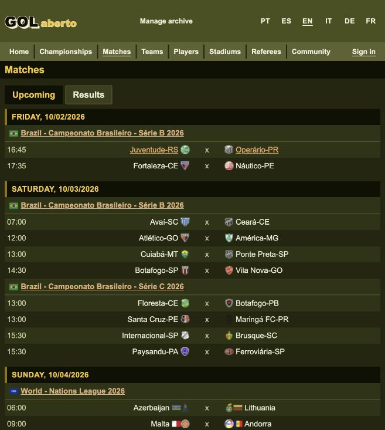
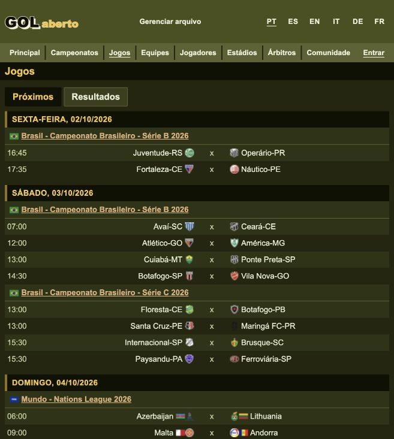
The previous English configuration was British English, which shares Portuguese’s numeric date order, and the shared heading additionally imposed day/month/year itself. The heading renderer now supplies only the weekday; native locale formatting owns the numeric date. The existing Stitch section-bar design remains the visual oracle.
Sayt doctor: exit 0 Sayt generate + lint: exit 0 Focused date and weekday regressions: exit 0, 4 tests / 11 steps / 0 failed Final isolated browser acceptance: exit 0, 67 passed / 0 failed (2m35s) Local web image build: exit 0 Local Caddy and render update: exit 0, healthy Live English / Portuguese heading and match-detail comparison: correct regional order Git whitespace check: exit 0
Focused tests retain weekday correctness across calendar boundaries and cover numeric dates in all six app locales, plus British English, independently from the reader’s timezone. The browser regression switches a Portuguese-language browser between the site’s English and Portuguese pages, checks the same match’s distinct 09/20/2026 and 20/09/2026 dates, and verifies shared headings against database-formatted dates. Its first run exposed an assertion reading a hidden outgoing screen; scoping that assertion to the visible screen resolved the test, and the final complete run passed. Live switching also confirmed October 2 as 10/02/2026 versus 02/10/2026 with the same 16:45 kickoff. The browser was returned to English Matches.
The lead reviewed the regional configuration, catalogue rename, shared formatter bindings and language transitions. One simplification pass retained the native date formatter and the small pure weekday renderer, removing the duplicate fixed-order formatting. No new design tool, specialist seat or human decision was needed for this locale correction.
The reported local login reached login/start successfully, then login/verify returned 401. At diagnosis the active imported database had no passkey registrations. The pre-import dump contained nine account rows but no credentials; the stopped original database also contained no credential records. Those sources cannot restore the server registration for the device’s saved key. The original database was returned to its stopped state, and the protected temporary extraction was deleted.
Guests now have separate Sign in and Create a passkey actions. Explicit creation calls the existing registration ceremony with the current guest token, retaining that guest’s id and handle. A server-refused login still fails without silently enrolling or linking an account. Both actions are disabled while a ceremony runs. All six catalogues supply the new label. The existing navigation action style is the oracle; no new design choice or design tool was needed.
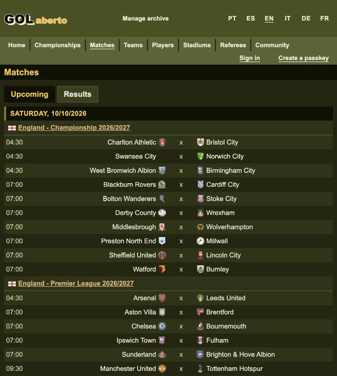
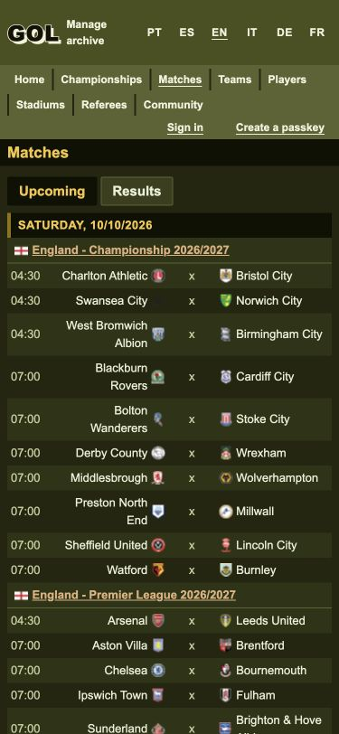
Live English and Portuguese labels were checked, and the browser was returned to English with its viewport override removed. Only Caddy and render were updated, and both are healthy. The archive retains its database system identifier 7697368835535351847 and all 318,827 games. A separate local Mac Chrome registration completed with register/verify 200 during verification, and the live database now contains one credential. The user owns device credential prompts; no real credential was created through browser automation.
Sayt doctor: exit 0 Sayt generate + lint: exit 0 Focused interpreter regressions: exit 0, 3 suites / 9 steps / 0 failed Focused real WebAuthn browser regression: exit 0, 1 passed / 0 failed (6s) Final Sayt integrate, isolated browser acceptance: exit 0, 67 passed / 0 failed (2m32s) Workspace web image build: exit 0 Local web update: exit 0, Caddy and render healthy All six locale catalogues parsed successfully Live 375px check: no horizontal overflow Git whitespace check: exit 0
The CDP virtual authenticator uses real resident credentials at localhost through a test-only TLS byte tunnel. The regression proves explicit guest promotion, preserved id and handle, refusal after its test credential’s server record is removed, no registration after that 401, explicit new enrollment and subsequent successful login to that new account. It runs on a separate disposable database and removes its identities and browser resources. The first full run found a test readiness race: server-rendered controls were visible before a guest session existed. Waiting for hydration and the minted session corrected the test; the focused rerun and final complete rerun passed. The temporary stack and exited runner were removed.
The lead reviewed the bounded terminal diff, shared localization and navigation behavior. The focused test implementer used the inherited session model; the Pronto backend/security seat was dispatched to GPT-6 Astra with high reasoning and reported no actionable findings. Existing login verification, relying-party id, origin checks and account permissions remain unchanged. One explicit simplification pass retained the common ceremony handler and existing registration function without adding further abstraction. The old identity cannot be recovered from the available registrations; completing any further device passkey prompt remains with the user.
On the Porto–Benfica match, the probability renderer reused the shared chart classes without importing their stylesheet. SVG labels therefore used black, while axes and grid lines had no stroke. The match screen now declares and imports the existing team stylesheet before its probability overrides. Event markers use the theme’s accent color, and the focused point outline uses its primary ink.
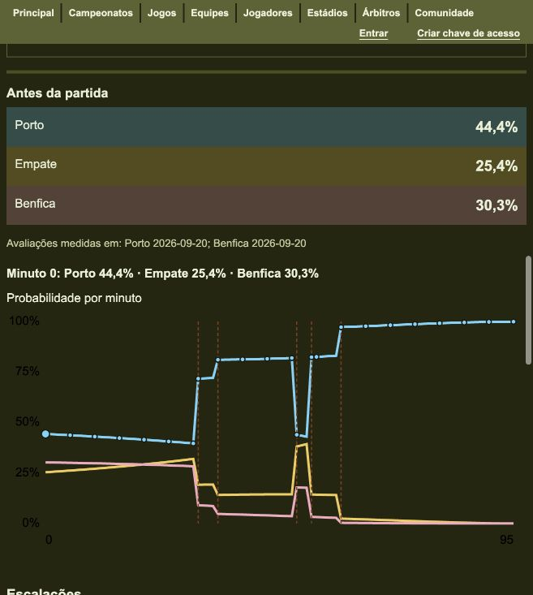
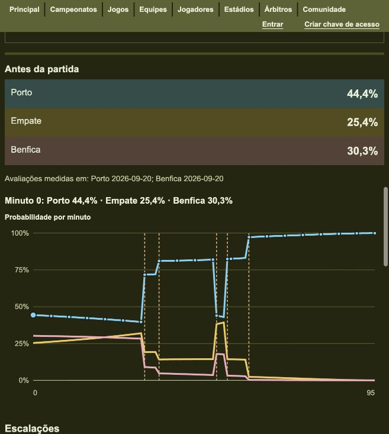
The existing theme and shared chart treatment are the design oracle; no new visual direction or design tool was needed. In dark mode the live labels and axis use rgb(195, 204, 154), providing 9.17:1 contrast against the page; event markers use rgb(224, 176, 122), providing 7.86:1. Clicking a point revealed the primary-ink focus ring at 3px. The three probability series and their data remain the same.
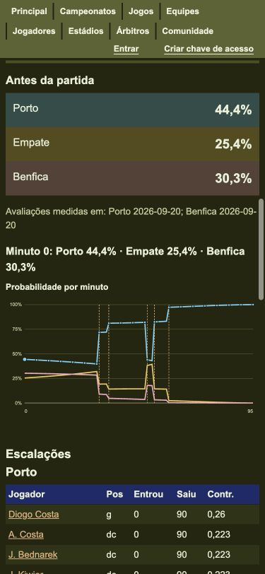
Sayt doctor: exit 0 Final Sayt generate + lint: exit 0 Final Sayt integrate, isolated browser acceptance: exit 0, 67 passed / 0 failed (2m38s) Contrast browser case: light and dark labels ≥4.5:1; axes, event markers, focus ring and all three series ≥3:1 Final workspace web image build: exit 0 Final local web update: exit 0, Caddy and render healthy Live reported match: labels, axis, grid and event marker paint verified Live focused point: primary-ink 3px stroke Live 375px check: no horizontal overflow Git whitespace check: exit 0
The first live update showed that declaring an asset dependency alone did not import its CSS; adding the screen stylesheet import resolved the missing axis paint. The first complete test run found that its ordinary match fixture had no historical ratings, so no chart could be rendered. The contrast case now inserts two temporary historical ratings for that match and removes them in a finally block. A rolled-back diagnostic confirmed an available timeline, and the final complete browser run passed. All test data lived in a separate disposable database; only the local web services were updated. The temporary stack and its exited runner were removed.
The lead reviewed the bounded stylesheet dependency, import order, theme tokens and live output. The Pronto frontend seat ran on GPT-5.6 Sol with medium reasoning, substituting for the unavailable Terra route, and returned no actionable findings. It checked the shared stylesheet import and cascade for unintended match-page changes. One explicit simplification pass retained the existing shared rules and two direct token substitutions, avoiding duplicate chart styles or a new abstraction. No further human decision remains.
The user requested filled stacked areas and the probability inspection behavior of the original GolAberto. The public site lookup was unavailable, so the checked local Rails view, /Users/robsonaraujo/work/golaberto/app/views/game/_game_odds.html.erb, supplied the reference: stacked filled series and a shared nearest-minute tooltip containing all three individual probabilities. That explicit direction and the established theme supplied the oracle; no new design tool or taste decision was needed.
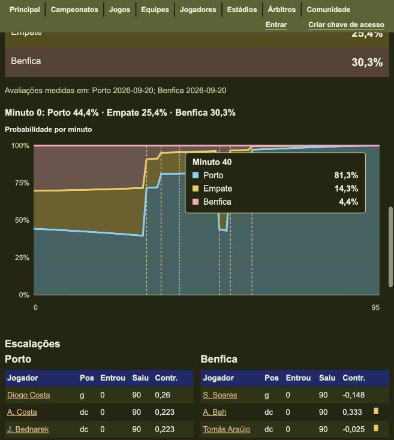
The home-win area starts at zero; the draw area starts at the home-win boundary; the away-win area starts above both. Polygons share their cumulative boundaries and retain the raw finite Poisson probabilities. The tooltip reports each outcome’s individual probability, with existing locale formatting, rather than cumulative totals. No probability formula or normalization changed.
Every minute has a full-height hit region, so inspecting the chart does not require landing precisely on a curve. A native hover card and vertical guide show the nearest minute immediately. Sparse keyboard focus points expose the same values. Pointer inspection takes precedence over a differently focused point, keeping exactly one card visible; leaving the plot hides the pointer card. Point markers appear on focus and cannot paint over the active card. The overlay remains inside the plot at both edges. These interactions use safe SVG output and CSS without a new dependency or scenario-state update.
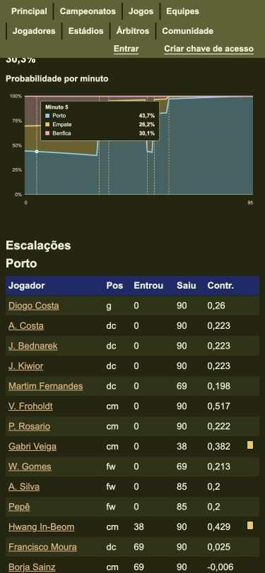
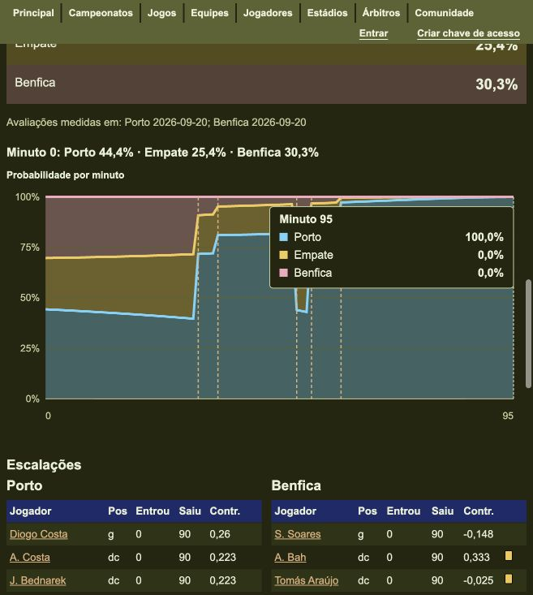
Live inspection also confirmed a single minute 45 card while a different minute 5 point held focus; the pointer correctly won. The normal viewport was restored. Only Caddy and render were updated, and both are healthy.
Sayt doctor: exit 0 Final Sayt generate + lint: exit 0 Final safe renderer and event suite: exit 0, 17 passed / 0 failed Final Sayt integrate, isolated browser acceptance: exit 0, 67 passed / 0 failed (2m29s) Final workspace web image build: exit 0 Final local web update: exit 0, Caddy and render healthy Live minute 40 hover: three individual probabilities, selected scenario minute unchanged Live focus / pointer precedence and final-minute edge: correct Live 375px check: no horizontal overflow; viewport restored Git whitespace check: exit 0
The pure suite checks shared polygon boundaries, retained finite probability tails, continuous full-height minute hit regions, safe Jessie output, localized tooltip values and edge clamping. The browser suite checks native top/bottom hover, hide/focus behavior, a single edge tooltip, unchanged scenario state and both themes’ contrast. It also verifies that every visible point precedes the active tooltip in paint order and that a focused point remains visible.
The first live capture and frontend review found later sample circles painting over an earlier tooltip. Focus-only markers resolved that layering issue. The first browser run timed out when Playwright tried to hover the exact center of a narrow hit rectangle covered by a circle from the same sample. The test now moves the native pointer through the plot’s hit regions, as a reader does; the final full suite passed. All database fixtures were isolated from the imported archive, and the disposable stack and exited runner were removed.
The test implementer ran on GPT-5.6 Sol with high reasoning, substituting for the unavailable Terra route. The Pronto frontend seat ran on GPT-5.6 Sol with medium reasoning, identified the tooltip paint-order issue also caught in the live check, and returned no actionable issues after the correction. The lead inspected the final live states and made one simplification pass, retaining the direct cumulative geometry and native CSS interaction without introducing handlers, a second state model or a charting dependency. No human decision remains.
The match chart now follows the pointer on both axes, reports the home–away score at the inspected minute, and shows minute ticks below and event labels above the stacked areas. Goal labels show the updated score; red cards carry their marker and multiplicity. Nearby events occupy separate rows with leaders, and the canvas grows with those rows while preserving the plot scale.
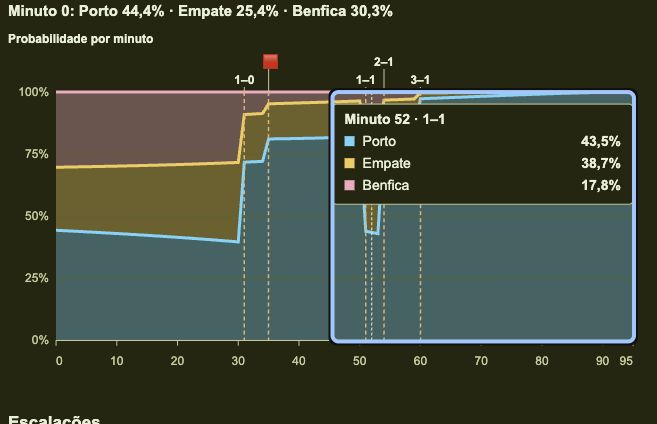
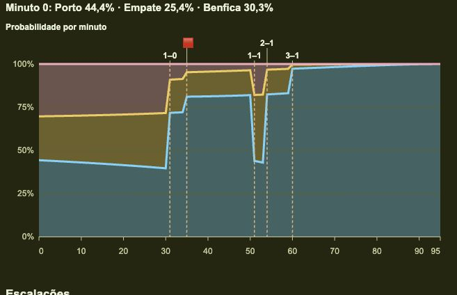
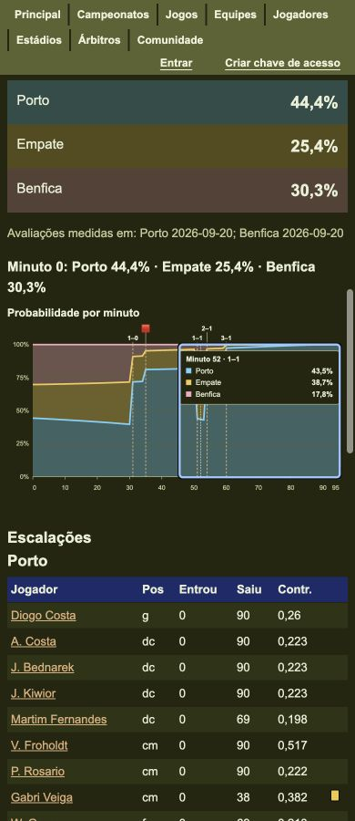
The user’s refinement and the original Rails app/views/game/_game_odds.html.erb are the accepted oracle: the original card follows the pointer, goals label the top axis with scores and red cards use a marker. No open visual choice required another mockup. The existing card layout and stacked colors were retained.
The pure renderer reads each minute’s existing score, including recorded and hypothetical goals. The terminal positions SVG tooltip groups beside the pointer, flipping and clamping to the viewBox; pointer leave or keyboard focus restores the authored placement. This introduces no app state, new renderer authority, database changes or dependencies. The terminal behavior is documented in its reference.
| Final gate | Observed result |
|---|---|
SAYT_VERSION=v0.43.1 ./saytw doctor | exit 0 |
SAYT_VERSION=v0.43.1 ./saytw lint, including generation and facts | exit 0; log /private/tmp/golaberto-pointer-lint-complete.log |
| Renderer and event tests through Sayt tools | 20 passed, 0 failed; exit 0 |
| Terminal renderer smoke tests | 12 passed, 0 failed; exit 0 |
Isolated integrate.nu --target check-acceptance --scale check-acceptance=1 | 67 passed, 0 failed, 2m54s; exit 0; log /private/tmp/golaberto-pointer-acceptance-final.log |
| Workspace-mode web build and deploy | exit 0; caddy and render healthy |
Browser coverage uses native pointer movement within a single minute strip to prove movement on both axes, checks individual probabilities and score changes at a goal, preserves scenario inputs, verifies focus and leave resets, and exercises both edges at desktop and phone widths in both themes. A forty-consecutive-goal renderer case checks dense annotation lanes; browser checks expand the header by 200 units and verify that the SVG grows without changing the plot’s horizontal or vertical scale.
The live Porto–Benfica page showed 1–1 at minute 52 and 3–1 at minute 60, with the expected 0–95 minute axis and all five source event annotations. Screenshots were captured and inspected after deployment. The browser acceptance project used a disposable database; its final runner was removed. The imported local archive was not migrated or used for tests.
The lead retained its current model. The separate-file test implementation used gpt-5.6-sol/high, and the frontend seat used gpt-5.6-sol/medium, substituting for the skill’s unavailable Terra route. The frontend seat found two issues: the shared SVG height cap could shrink dense plots, and simultaneous red cards lacked their count in accessible text. Both were fixed and regression-covered; final review reported no actionable findings. The explicit simplification pass retained the direct geometry and shared card-label calculation; no further change was useful. No remaining human decision.
An initial generation attempt hit a cache-write sandbox restriction and was rerun with approved access. A lint attempt detected a CSS edit made after facts generation; final stable generation/lint passed. The first browser run began before generation had finished rewriting tool pins and failed during image setup; the final run used the repository’s restored Sayt 0.43.1 / Pronto 0.13.2 pins and passed. The renderer smoke suite’s first restricted-network attempt lacked its pinned SES fetch; the approved rerun passed. Failed attempts are not counted as successful gates.
The hover card now lists away, draw, home from top to bottom, matching the chart’s pink, yellow and blue stacked areas. Each name keeps its own probability and swatch. The user specified this order directly, so no new design choice or mockup was needed.

The renderer’s row order and existing unit/browser expectations were updated together. On the live Porto–Benfica page at minute 52, the card showed Benfica 17,8%, Empate 38,7%, Porto 43,5%. The local web services were rebuilt and healthy; the isolated browser stack and its completed runner were cleaned up.
| Gate | Observed result |
|---|---|
| Sayt doctor | exit 0 |
| Sayt generation/lint | exit 0; /private/tmp/golaberto-legend-lint.log |
| Focused renderer tests | 16 passed, 0 failed; exit 0 |
| Isolated browser acceptance | 67 passed, 0 failed, 2m27s; exit 0; /private/tmp/golaberto-legend-acceptance.log |
| Web build/deploy | exit 0; both services healthy |
The lead reviewed the bounded ordering change and made one simplification pass; no additional change was useful and no actionable findings remained. No delegated seats or design tools were needed: commands and the live browser settled the row-order question. The lead retained its current model. Established tool pins were preserved. No remaining human decision.